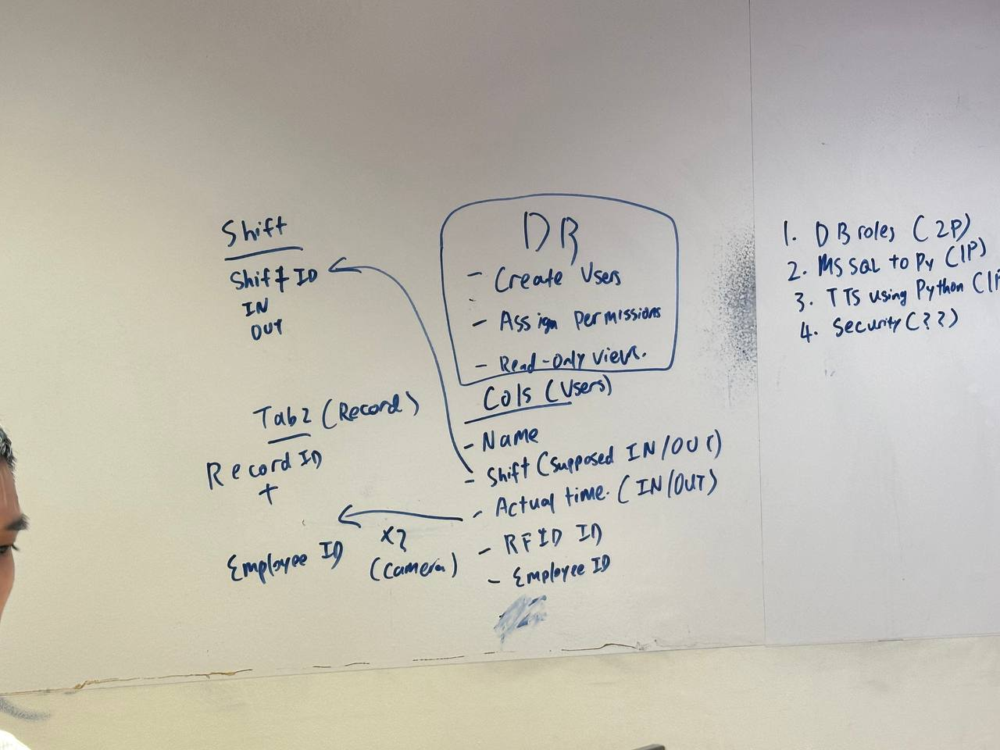
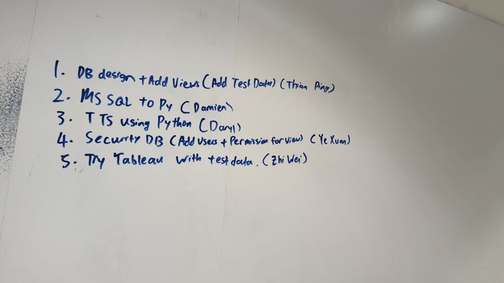

Week 3
Welcome to my week 3 page for my PFD module. This week we discussed mainly on our roles. Within our project scope based on our strongsuit. We went through a fair and open vote on which part we would be doing, and we have settled on the following for the moment.
- Database Design (table struct.), Views (for the Data Analyst role) and test data, will be done by Thian Ping
- Linking Microsoft SQL Server to Python will be done by Damien
- Text to speech to Python will be done by Daryl
- Securing of Database (Adding of users) and assigning permissions will be done by Ye Xuan
- Finally, the role of visualising the data and making sense of the visuals, will be done by me (Zhi Wei) using Tableau
Next is that, our lecturer (Mr Ben) showed us the concept of TDD (Test-Driven Development), where we first make up tests for each specific function, and expected output. That discovery also made me want to integrate it into our design philosophy. Therefore, I am also making up tests for the project for the various roles, such as the Database connectors, expected outputs (like rows count), (tuple output) and others. I have also made a test regarding the text-to-speech, and whether it reaches our standard, by using speech recognition to detect the output of the TTS, convert it to text, and comparing the text output. Very cool stuff ahead! Finally, hoping our sponsor AIDC does make it to us next week, and get us our needed devices (eg serial adapter, and gantry (if possible)). So that we can use PySerial and other libraries to interface with DB, speakers and others.
 